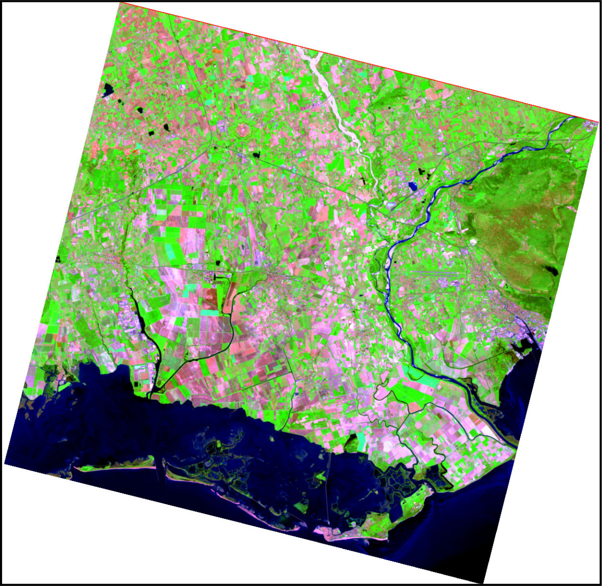
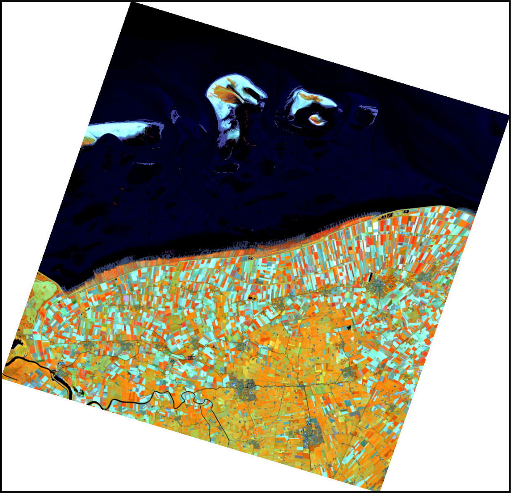
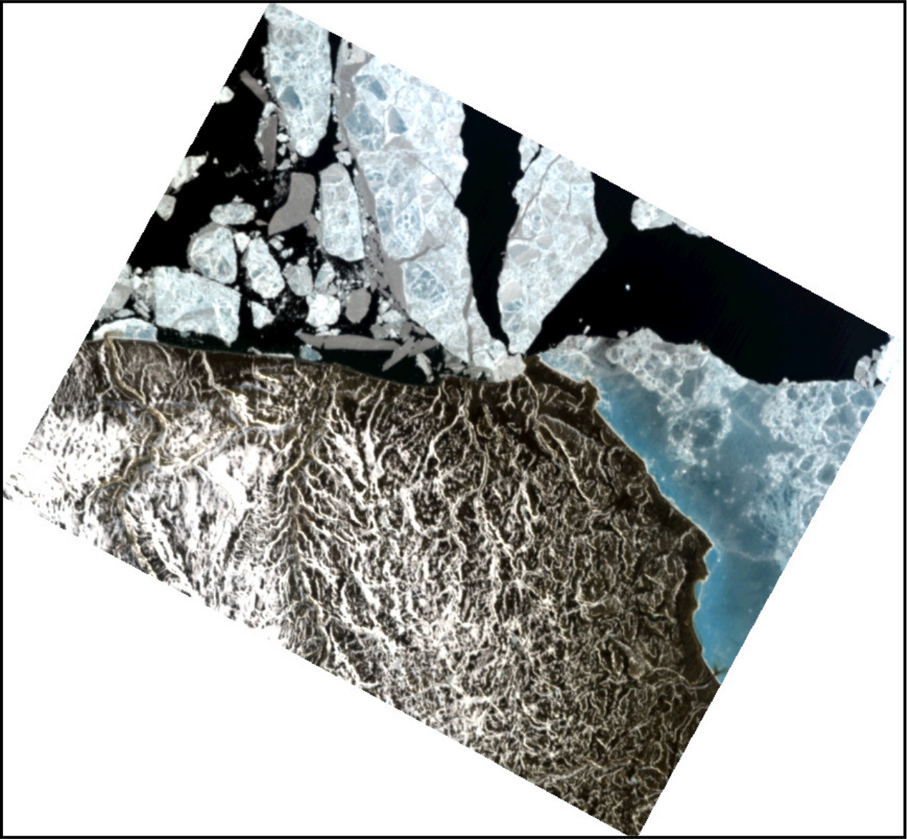

i.hyper.import
imports hyperspectral imagery into a 3D raster map (raster_3d).
The module reads supported hyperspectral products and converts their spectral bands into a single 3D raster map. The vertical (z) dimension of the 3D raster represents the spectral dimension, where each cell (voxel) contains a radiance or reflectance value for a specific spatial position (x, y) and spectral band index.
i.hyper.import is part of the i.hyper module family designed for hyperspectral data import, processing, and analysis in GRASS. It is typically used in combination with i.hyper.preproc, i.hyper.explore, i.hyper.composite, and i.hyper.export.
The module currently supports the following hyperspectral products:
During import, the appropriate product library from
i_hyper_lib is automatically loaded (for example,
enmap, prisma, or tanager). Metadata
are parsed, bands are validated, and the resulting 3D raster map is created
with band metadata (wavelength, FWHM, validity) and scene
radiometric metadata (radiometric_quantity, radiometric_units).
The metadata are used by other i.hyper.* modules. If metadata writing
fails, the raster import reports a warning because downstream
i.hyper modules require hyper.json.
The resulting raster_3d map can be analysed with standard GRASS
3D raster tools (r3.mapcalc, r3.stats,
r3.univar) or processed further with the i.hyper suite
of modules.
| Product | Input layout | Output values |
|---|---|---|
| EnMAP L1B | Separate VNIR and SWIR .TIF or .BSQ images | At-sensor radiance in W/m^2/sr/nm |
| EnMAP L1C | Merged .TIF or .BSQ image | At-sensor radiance in W/m^2/sr/nm |
| EnMAP L2A | Merged .TIF or .BSQ image | Surface reflectance, unitless |
| PRISMA L1 | HDF-EOS5 VNIR and SWIR cubes | TOA radiance in W/(m^2 sr um) |
| PRISMA L2C/L2D | HDF-EOS5 VNIR and SWIR cubes | Surface reflectance, unitless |
| Tanager BASIC/ORTHO | HDF5 SWATHS or GRIDS product | Surface reflectance when available, otherwise TOA radiance |
Native ihyper | Gzip-compressed native archive | Archived 3D raster and metadata unchanged |
PAN data are not imported from PRISMA products. Tanager bands are sorted by wavelength. EnMAP and PRISMA require calibration metadata; import stops instead of assigning physical units to uncalibrated values when required calibration is missing or invalid.
EnMAP applies value = DN * GainOfBand + OffsetOfBand. PRISMA L1
applies radiance = DN / scale_factor. PRISMA L2C/L2D applies
reflectance = minimum + DN * (maximum - minimum) / 65535.
Tanager float values are imported without radiometric rescaling.
| Product | Spatial handling | GRASS project requirement |
|---|---|---|
| EnMAP L1B | Separate detectors are converted to north-up images and combined in native sensor geometry; the result is not map-projected or orthorectified | Use L1C when georeferenced radiance is required |
| EnMAP L1C/L2A | Existing product map grid is used directly | Project CRS must match the EnMAP image CRS |
| PRISMA L1/L2C | Per-pixel latitude/longitude is transformed to the current project CRS and assigned to an importer-derived grid using nearest-cell assignment | Current project CRS is the target CRS |
| PRISMA L2D | Existing product grid is used directly | Project CRS must match the PRISMA product CRS |
| Tanager BASIC | Per-pixel latitude/longitude is projected onto the Planet_Ortho_Framing grid using bilinear forward assignment | Project CRS must match the framing EPSG |
| Tanager ORTHO | Existing product grid is used directly | Project CRS must match the product EPSG |
The importer does not generally reproject already gridded products into a different GRASS project CRS. Check the product CRS before import and create or select a matching GRASS project. CRS compatibility is not checked for all direct-grid imports, so a mismatch may produce an incorrectly located map. PRISMA nearest-cell assignment can leave unassigned cells as NULL. Tanager BASIC uses a limited local gap fill when SciPy is available; remaining unvisited or nodata cells stay NULL.
Only bands retained by product-specific filtering are added to the output cube. EnMAP uses wavelength metadata, expected channel lists, and available valid-pixel statistics. PRISMA applies its wavelength flags before import. Tanager removes bands without any finite pixels after nodata masking.
The -n flag records validity for represented source bands in
bands.validity, bands.count, and
bands.count_valid; it does not add invalid or all-NULL slices to
the cube. Consequently, bands.count can be greater than the
output cube depth. Product bands discarded before metadata construction,
such as PRISMA flag-zero wavelengths, are not represented.
Imported datasets are written with metadata key derived=false.
Datasets produced later by processing modules (for example
i.hyper.preproc) are written as derived=true.
Extended metadata are written under unified branches (extended_metadata.acquisition, geometry, radiometry, atmosphere,
quality, processing, uncertainty) and
product-native provenance branches (extended_metadata.enmap,
prisma, tanager). Unified and product-native keys
may contain the same value when a unified key is derived directly from a
source product key.
Composite channels use the nearest retained wavelengths. EnMAP creates predefined composites only when composites is specified. PRISMA and Tanager create RGB by default when composites is omitted. composites_custom must contain exactly three wavelengths. Temporary rasters are removed after a successful import.
During import, i.hyper.import temporarily adjusts the computational region to match the input data, ensuring consistent alignment between imported bands. On successful completion, the previous region is restored.
i.hyper.import
can also restore hyperspectral data directly from a native archive with
product=ihyper. The input must be a gzip-compressed tar archive
containing a valid manifest.json; its filename suffix is not
significant. Native archives restore the raster_3d,
hyper.json, and manifest-listed composite support files. The
archived map name is restored as-is, output and other processing
options are ignored, and restore fails if that 3D map already exists in the
current mapset.
# EnMAP example for a product in UTM Zone 32N. Use the CRS reported # for your own product when creating the GRASS project. grass -c EPSG:32632 -e ~/grassdata/hyper_32N # Initialize and enter the new project (PERMANENT Mapset) grass ~/grassdata/hyper_32N/PERMANENT
# PRISMA L2D example
i.hyper.import input=/data/PRISMA.he5 \
product=prisma \
output=prisma \
composites='rgb,cir,swir_agriculture,swir_geology'
# Console output:
Importing product: PRISMA
Loading floating point data with 4 bytes ... (1254x1222x234)
Created 3D raster map with all bands: prisma (234 bands).
Generated composite raster: prisma_rgb
Generated composite raster: prisma_cir
Generated composite raster: prisma_swir_agriculture
Generated composite raster: prisma_swir_geology
(Fri Nov 5 13:12:00 2025) Command finished (1 min 23 sec)

# Import an EnMAP L2A product and create RGB and CIR composites
i.hyper.import input=/data/EnMAP_data_folder/ \
product=enmap \
output=enmap \
composites='cir,swir_agriculture' \
composites_custom='650,1650,2200'

# Tanager BASIC radiance example
i.hyper.import input=/data/Tanager.h5 \
product=tanager \
output=tanager \
composites='rgb'

# Restore a native hyperspectral archive into the current mapset
i.hyper.import input=/data/hyperspectral_data.ihyper \
product=ihyper \
output=ignored_name
For native archive restore, the archived map name is restored as-is and the
output option is ignored.
.h5 (HDF5) hyperspectral
data products such as PRISMA and Tanager.
gdalwarp is used for EnMAP L1B detector-image north-up
preprocessing.